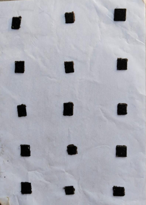
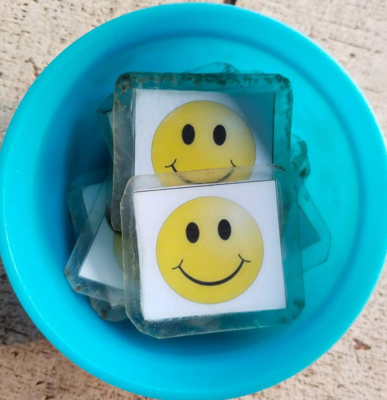
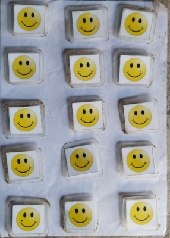
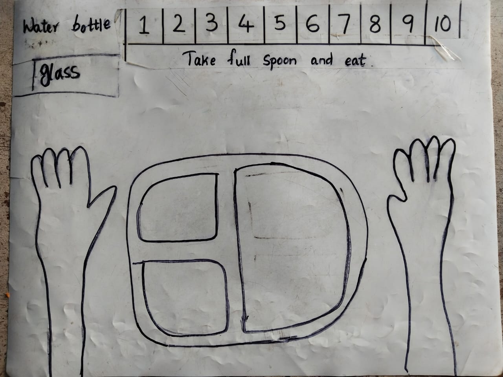

Resource: Eating Interventions
Children and Eating
Battles around food are an unavoidable part of being a parent. Children and parents seem to have completely different opinions about pretty much every aspect of food - what to eat, when to eat and how to eat.
Eating more than what we need, ‘indulging’, seems to be becoming a cultural norm. It does not help that more and more junk food is being engineered to create cravings. “No one can eat just one” is not a cute advertisement tagline any more, it is starting to sound more and more like a warning on an addictive substance!
At the same time, issues like picky eating, eating in a hurry, refusing to chew, not being able to maintain oral hygiene are on the rise. These issues become much more pronounced and difficult to handle with neurodiverse children, whose sensitivities and anxieties are as such difficult to live with.
As parents, our goal should be to help children eat good food in reasonable quantities at a sustained pace. In this article, we present a few thoughts and hands-on techniques to help neurodiverse children acquire and maintain good food habits.
Cultivate a good attitude towards food
For many parents, food is synonymous with love. We can never hold back our love or their favourite food! Most of our children love food, they are fully attentive and engaged around it, and it is difficult to think how that love is impacting them. However, our love should empower them, make them healthy and independent.
Eating is a part of lifestyle. Also, modelling is very powerful. So, any change we expect in the food habits of the child has to be implemented by the entire family.
The family should have a good routine for waking up and getting physical activity in the morning. It is important to drink water to stimulate bowel movement and build a sense of hunger. This is especially important for pooreaters.
It is important to plan balanced meals. Have a weekly meeting to plan the menu. Make space for favourite foods like samosas, popcorn or chicken burgers. Decide on the quantities. Even if your child is not verbal, make them a part of the meeting and let them respond with yes or no. All this activity builds predictability and reduces anxiety about favourite foods. You can use the menu as an opportunity to build communication, create a sense of time through the calendar, build it into their weekly #schedule, help them get into the habit of checking written instructions or schedules instead of asking the same questions again and again…the possibilities are endless! Remember our children love food and it is a great motivator.
Last but not least, eat together as a family as frequently as you can. Show how to eat measured quantities of food. Talk about food and how you enjoy good food. Model to children that one can eat good, healthy food in moderate quantities and still be happy!
When children eat too much
This is by far the most common issue with neurodiverse children, especially as they grow up. Children eat because food calms them down, it provides actual psychological comfort! Most neurodiverse children also do not have well developed interoception that tells them when they are full. Sometimes, food not being available makes them upset and aggressive.
While food calms them down, overeating affects health negatively. It is necessary to address this.
Food and eating is a lifestyle issue. The entire family has to follow, model and reinforce the behaviour we expect of them. Working together and supporting each other is important.
- Make a weekly menu plan together. Include favourite as well as not favourite foods. The menu gives visibility of when favourite food is scheduled and helps prepare oneself for the not so favourite food. Remember to accommodate fancy food items and some junk food so there is no sense of deprivation.
- The menu should cover all meals - midmorning snack, evening tea etc. If it is not on the menu, you do not eat it.
- Agree on measurements - we will have one samosa each; or one bowl of popcorn. Do not prepare or buy more than that.
- On a daily basis, for every meal, everyone gets into the habit of measuring and eating - two rotis, one bowl of biryani etc. This shows them that everyone is following the same rules.
- Remember it is okay to say - “you have eaten your share. We can have this again - in the evening/tomorrow/next week” - as per your menu.
Talk together, plan, do it together - modelling is very important.
Take help of your therapists to handle any behaviours around food. Also, start when the children are young, it helps them get into good routines and helps everyone!
When children eat too little
Some neurodiverse children eat very little food. It becomes a medical concern as the child’s immunity becomes low, they fall ill frequently, cannot play or move as they want to or like to, get irritated quickly which results in overall unhappiness and many behavioural issues. An unhappy child finds it difficult to learn or relate positively to learning.
Again, let us remember that eating is a lifestyle issue. While there are specific interventions to help with eating too little, interventions work well when the right environment and attitudes are in place. It is important for the entire family to follow, model and reinforce the behaviour we expect of the children. Working together and supporting each other is important.
However, please eliminate any medical issues like dental sensitivities, stomach ailments etc. before trying the following interventions. Also, address any sensory sensitivities.
Setting up the environment and attitude
The family should have a good routine for waking up and getting physical activity in the morning. It is important to drink water to stimulate bowel movement and build a sense of hunger. This is especially important for #pooreaters.
Having access to food throughout the day does not help with building an appetite. Food should be available at fixed time intervals that are part of a schedule. Even if a child ate poorly at breakfast, giving them a large glass of milk as a mid-morning snack may not be a good idea, as it interferes with the next meal.
Relying on children’s hunger and letting them starve if they do not eat also does not help build good eating habits. Again, most neurodiverse children have poor interoception - they may not understand the relationship between eating, feeling full and that satisfaction leading to good quality time. If we let them starve, they may end up getting accustomed to staying hungry.
Reading books about food, learning about different kinds of food and tastes, communicating ‘I like’ and ‘I don’t like’ for foods, cooking and baking, talking about feelings while having these conversations can help in building food positivity in children.
Here is a video sample of a social story about a boy eating lunch, that can help a child get comfortable around eating.
All members of the family eating together as frequently as you can is important. While you eat together, talk about food and how you enjoy good food. Model to children that one can safely try new food, it is okay to try and that sometimes you may end up liking new food too!
Intervention for quantity
- Notice how much food the child is able to eat, at the beginning. This is the baseline for how much the child needs to eat. Measure this in spoonfuls, bites or mouthfuls.
- Make a visual schedule for the previously decided measure and the child ticks each box as they finish each measure. We can also use tokens that the child can remove for the countdown. This helps the child track how much they have eaten and how much more is left. Predictability helps manage anxiety.
Here is a video that shows a child using tokens to eat a minimum quantity.
- Once the child gets comfortable eating that portion for a few days, gradually increase the measure over a number of days. Decide the pace of increment carefully so we do not overwhelm the child with suddenly increasing demands.
- Clearly inform the child whenever demand is increased.
- With some children, preparing them with a social story helps. Writing a menu together and discussions about food also help the child to prepare himself to eat.
Increasing variety
Once the child becomes comfortable with the schedule of eating, introduce one new food every three days, just one spoonful - preparing by writing a schedule and social story. Slowly, new foods became staple foods.
Pace of eating
The other common issue with neurodiverse children is that they eat either too fast or too slow. Some finish an entire meal in 5 minutes; some take up to 2 hours to eat a snack.
Typically, in either case, the child does not chew properly and it affects digestion. The quick eaters usually eat quite a lot of food before their hunger and palate are satisfied. This leads to weight gain and associated negative loops. The slow eaters tend to pocket the food in the mouth - this affects their oral hygiene. Also, the food tastes bland after being in the mouth for a long time and they lose interest.
Intervention for the quick eaters
The key is to create some delay between one mouthful and the next, encouraging them to eat slowly and chew properly.
- the child has a smiley chart and a bowl of smileys. The chart is a laminated sheet with velcro afixed on it. Smileys also have velcro fixed at the back. Pictures are below.


- Once the child takes one spoonful of food into the mouth, they fix the smileys from the bowl, on the chart. During this time, they keep chewing and the rule is they cannot take another mouthful till all the smileys are fixed. The chart with all smileys fixed looks like this.

- Once all smileys are fixed, they take another spoonful of food.
- This time, they pick the smileys from the chart and put them in the bowl.
- Keep doing this till the food is finished.
Here is a video showing a child using a smiley chart to maintain a delay between mouthfuls.
Once, we came across a child who would touch food and everything around with both hands. Smiley chart would have been unhygienic. We modified the intervention.
- A table mat, with spaces drawn for the child’s plate, glass and hands was created. The child was expected to keep the plate and glass on the mat, as well as keep their hands on the spaces indicated on the mat. The mat can look like this.

- A number line with numbers 1 to 10 was also drawn on the top of the mat.
- The child takes a spoonful of food, and uses fingers to count from one to ten on the numberline. They chew while doing this.
- Once the numbers are counted, they can take the next spoonful.
- The mat structure helped the child keep their hands clean while eating, as well as introducing delay between spoonfuls through counting.
Here is a video showing a child using a mat like that to maintain a healthy pace of eating.
In both the above cases, the children were older than ten. All the prompts used to remind them to follow the sequence were either written or pictorial so there was not much verbal input, repeated instructions or anyone losing temper.
Intervention for the slow eaters
With slow eaters, the key is to create a limit on the time the child keeps food in the mouth. To do this, we mark the beginning and ending of each mouthful so the child has a cue for when the food should be swallowed. We also need to help the child keep track of how much they should eat and how much they have eaten. For this, we use checkboxes or tokens.
- Establish the average quantity the child can comfortably eat. Measure this in bites, spoonfuls or mouthfuls.
- Make a visual schedule for the number of measures to be eaten. We provide tick boxes or tokens for each measure. For example, if the child has to eat 15 spoonfuls, we make 15 checkboxes or give 15 tokens.
- The child takes food in the mouth. We start counting from 1 to 10, in a calm voice, to encourage the child to continue chewing. We can also draw a number line and progress on it if we want to avoid verbal input. This tells the child that they have to finish the mouthful within this count.
- At the end of the count, the child ticks a box or counts down by removing a token.
- We can plan a break for every 3 or 5 measures, so the child can pause and does not get overwhelmed.
- The intervention ends when the food is finished!
Video - Picky Eaters - addressing feeding issues in autism
This video from Sethu, Goa, compliments the material presented in this resource by talking about various food related difficulties faced by children on the spectrum, and the need to address medical and sensory issues.
Please note that these interventions are shared for general guidance. Designing and executing interventions - more importantly - noticing how the child responds and modifying the interventions so the child does not get distressed, is a specialist job. Consult qualified therapists as necessary.